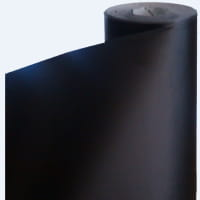

Самоклеящиеся плёнки
Автомобильные пленки
- Пленки для автомобилей
-
Самоклеящиеся пленки применяются не только в изготовлении рекламы, но и в автомобильной промышленности. В наше время самоклеящиеся пленки используют и для изменения цвета кузова автомобиля. Но стоит помнить, что для автомобилей используются только специальные пленки. Специальные автомобильные пленки обладают следующими характеристиками:
- они способны растягиваться и не имеют "памяти" (не пытаются вернуться в первоначальное состояние);
- способны выдерживать перепады температур (минус ночью, плюс днем);
- устойчивы к воздействию дорожных реагентов;
- устойчивые к воздействию щелочей и слабых кислот;
- имеют сильный клеевой слой не повреждающий оригинальное лакокрасочное покрытие;
- имеют долгий срок службы;
- устойчивы к ультрафиолету (не выгорают на солнце).
Пленки для автомобилей могут быть глянцевыми, матовыми, прозрачными (защитные пленки для автомобилей), пленка хамелеон, серия пленок с блестками, пленка для автомобилей металлик,пленка под карбон (или как еще говорят 3D карбон), пленка для печати ("аэрография") и многое другое.
- Пленка с фактурой 3D карбон KPMF(Англия)
-

К870213D карбон KPMF - Полимерная каландрированная ПВХ пленка с перманентным акриловым клеем.
Продукт поставляется с двумя вариантами клеевого слоя: сплошным и сетчатым (airelease). Клеевая основа airelease позволяет легко выводить воздух при нанесении пленки на кузов автомобиля.
- Характеристики:
- Цвет черный, серебристый
- Толщина пленки 145 микрон
- Тип клеевого слоя акриловый прозрачный перманентный
- Подложка 120 гр. силиконизированная бумага
- Хранение два года при тепературе 23°С и влажности 50%
- Растяжимость 16 Н/мм2
- Эластичность 90%
- Сила адгезии через 20 мин/под углом 180°500 Н/м
- Сила адгезии через 24 часа/под углом 180°650 Н/м
- Воспламеняемость самозатухающая
- Срок службы, при вертикальном использовании и среднеклиматических европейских условиях 5 лет
- Температура нанесения от +8°С до +25°С
Наименование Размер мм. Carbon (black) 1520x50 Carbon (silver) 1520x50 - Защитная пленка SOLO Moto Protect Warp
-
SOLO Moto Protect Warp - антигравийная пленка для защиты автомобилей
Все более актуальной в наше время становится тема защиты автомобилей от сколов. Автомобиль в нашей стране, все-таки, не совсем средство передвижения, на котором только ездят! Автолюбители ухаживают за своими автомобилями. И, думаю, каждому хочется как можно дольше сохранить внешний вид своего авто в идеальном состоянии. И прежде всего потому, что стоимость сохраненного автомобиля при продаже будет выше, чем стоимость автомобиля всего покрытого сколами.
Антигравийная защита! Вот что всем нам нужно - антигравийная пленка на автомобиль!
- В этих случаях на помощь нам приходит специально разработанная антигравийная пленка. Антигравийная пленка на автомобиль представляет собой толстую прозрачную пленку и может быть двух видов:
- защитная пленка из ПВХ (поливинилхлорида);
- защитная пленка из полиуретана (PU).
Защитные антигравийные пленки из ПВХ
Для антигравийной защиты кузова автомобиля можно использовать любую самоклеящуюся прозрачную пленку и даже литую толщиной 50 микрон. Но толщины литой пленки не достаточно и любой камешек с острыми краями ее пробьет. Тем более на морозе, так как все ПВХ пленки на морозе становятся менее пластичными и хрупкими. Для защиты лучше всего подходят пленки толщиной 100 микрон. Это гибридная ПВХ пленка толщиной 250 микрон. Правда не для любого климата она подходит, так как способна переносить отрицательные температуры только до -25°C. Как показала практика, эта пленка может переносить и более низкие температуры.
Защитные антигравийные пленки из полиуретана:
Самоклеящиеся защитные пленки для автомобилей из полиуретана используются многими производителями автомобилей. Их вы можете увидеть около колесных арок и в местах подверженных пескоструйному эффекту практически на любых иномарках. Пленки из полиуретана имеют толщину от 200 микрон, что обеспечивает замечательную защиту кузова автомобиля от сколов. Более того, полиуретановые пленки очень мягкие и не теряют своих свойств даже на морозе.
Температура использования таких пленок от -40°C до +90°C. Из недостатков этой пленки нужно отметить способность пленок из полиуретана желтеть от воздействия ультрафиолета. Но даже и это не проблема, если выбрать полиуретановую пленку с специальным слоем защиты от ультрафиолета. Такие пленки не желтеют в процессе эксплуатации и не позволяют кузову автомобиля выгорать даже под пленкой. Наша фирма предлагает пленку из полиуритана SOLO Moto Protect Wrap 250 микрон. Ультрапрозрачная ламинационная плёнка для наружного применения (3 года).
Клей на высокопрочной сольвентной основе. Благодаря особенной толщине плёнки (250 микрон) достигается стойкость и защита кузова авто.Для обеспечения хорошего качества приклеивания плёнка наносится на чистые, сухие обезжиренные поверхности.
Наименование Размер мм. SOLO Moto Protect Warp 1370х50